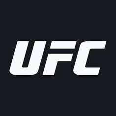

A continuación en este listado estara los mejores KO´S de los mejores 5
peleadores de UFC libra por libra y otro para una pagina con sus biografias
más detalladas.

| AUTOR | POEMA | AÑO |
|---|---|---|
| Jorge Manrique |
Recuerde el alma dormida
Avive el seso y despierte
Contemplando
Cómo se pasa la vida,
Cómo se viene la muerte,
Tan callando,
Cuán presto se va el placer,
Cómo, después de acordado
Da dolor,
Cómo, a nuestro parecer,
Cualquier tiempo pasado
Fue mejor.
|
1440 – 1479 |
| Garcilaso de la Vega |
En tanto que de rosa y azucena
se muestra la color en vuestro gesto,
y que vuestro mirar ardiente, honesto,
enciende el corazón y lo refrena;
y en tanto que el cabello, que en la vena
del oro se escogió, con vuelo presto,
por el hermoso cuello blanco, enhiesto,
el viento mueve, esparce y desordena;
coged de vuestra alegre primavera
el dulce fruto, antes que el tiempo airado
cubra de nieve la hermosa cumbre.
Marchitará la rosa el viento helado,
todo lo mudará la edad ligera,
por no hacer mudanza en su costumbre.
|
1561 - 1627 |
| Lope de Vega |
Un soneto me manda hacer Violante,
que en mi vida me he visto en tal aprieto,
catorce versos dicen que es soneto;
burla burlando van los tres delante.
Yo pensé que no hallara consonante,
y estoy a la mitad de otro cuarteto;
mas si me veo en el primer terceto,
no hay cosa en los cuartetos que me espante.
Por el primer terceto voy entrando,
y parece que entré con pie derecho,
pues fin con este verso le voy dando.
Ya estoy en el segundo, y aún sospecho
que voy los trece versos acabando;
contad si son catorce, y está hecho.
|
1648 - 1695 |
La Ultimate Fighting Championship (UFC) (lo que en español se traduce como: Campeonato de lucha extrema)
es una empresa estadounidense de artes marciales mixtas. Es considerada como la mayor empresa de MMA en el mundo,
que alberga la mayor parte de los mejores peleadores del ranking en el deporte y produce eventos por todo el mundo.
Dana White es el presidente de la UFC.